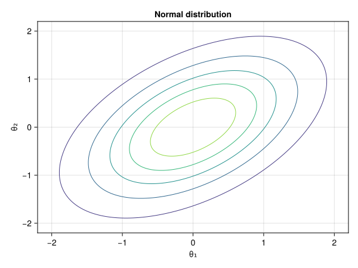
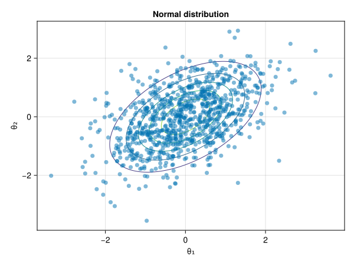
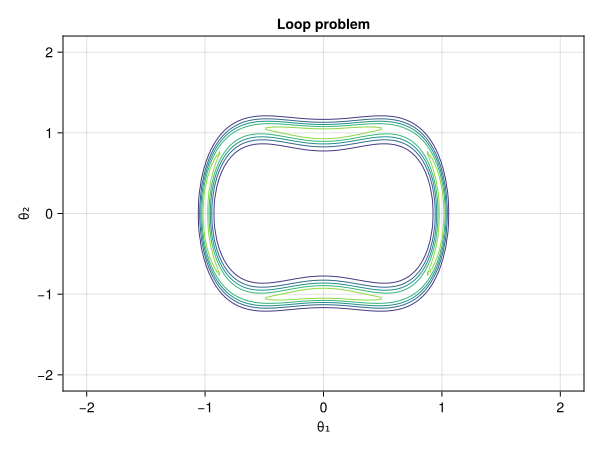
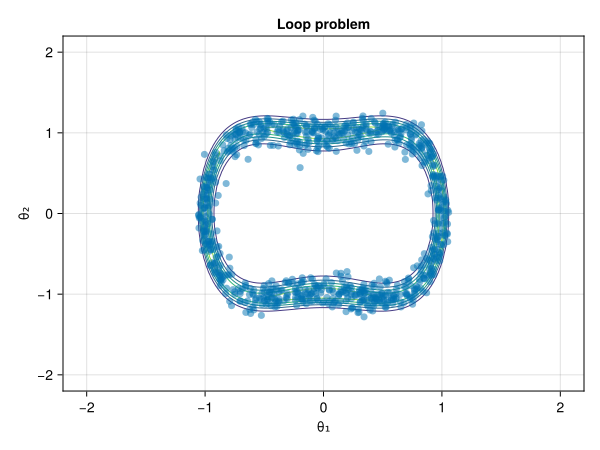

Basic usage of package
The Mici package provides modular implementations of Markov chain Monte Carlo (MCMC) samplers that can be used to generate approximate samples from target probability distributions of interest. In particular the package implements Hamiltonian Monte Carlo (HMC) samplers which use the gradient of the target distribution density to propose long-range moves with a high probability of acceptance by simulating Hamiltonian dynamics.
Mici is designed to work with the LogDensityProblems and AbstractMCMC interfaces, the former for defining the log density of the target distribution of interest, and the latter for running the MCMC sampling once the target problem and sampler have been specified.
The examples below illustrate setting up a problem using the LogDensityProblems interface, instantiating a Mici sampler, using the AbstractMCMC.sample method to generate a chain of samples for the target distribution problems and then using CairoMakie to visualize the chain samples and target density.
using Mici
using AbstractMCMC
using LogDensityProblems
using Random
using Statistics
using CairoMakie
Sampling from a normal distribution
As a simple first example we consider sampling from a normal (Gaussian) distribution, parameterized by a mean vector μ and positive-definite covariance matrix Σ.
\[\pi(\theta; \mu, \Sigma) = |2\pi\Sigma|^{-1} \exp\left( -\frac{1}{2} (\theta - \mu)^T \Sigma^{-1} (\theta - \mu) \right)\]
We first define a type to contain the parameters of our target distribution, setting defaults corresponding to a correlated bivariate normal distribution and using the PDMat positive-definite matrix type from the PDMats package to represent our covariance matrix
using PDMats
@kwdef struct 𝒩{T, M}
μ::Vector{T} = [0.0 ; 0.0]
Σ::M = PDMat([1.0 0.5; 0.5 1.0])
endThe LogDensityProblems interface requires us to define a few key methods for our problem type. The LogDensityProblems.dimension method should return the dimension of the space the target distribution is defined on:
LogDensityProblems.dimension(p::𝒩) = length(p.μ)The other key required method is LogDensityProblems.logdensity which given a problem instance and a point should return the log density evaluated at the point (potentially ignoring any constant terms):
function LogDensityProblems.logdensity(p::𝒩{T, M}, θ) where {T, M<:AbstractPDMat}
δ = θ .- p.μ
-0.5*invquad(p.Σ, δ)
endFor the HMC methods implemented in Mici, we require that the target distribution density is differentiable and that we can evaluate the gradient of the log density. We can indicate the log density is (first-order) differentiable by adding an appropriate definition for LogDensityProblems.capabilities:
LogDensityProblems.capabilities(::Type{<:𝒩}) = LogDensityProblems.LogDensityOrder{1}()and then define a method LogDensityProblems.logdensity_and_gradient which computes both the log density and its gradient with respect to the input point and returns both:
function LogDensityProblems.logdensity_and_gradient(p::𝒩{T, M}, θ) where {T, M<:AbstractPDMat}
δ = θ .- p.μ
ℓπ = -0.5*invquad(p.Σ, δ)
∇ℓπ = - p.Σ \ δ
return ℓπ, ∇ℓπ
endNote that while we have manually implemented derivatives here, it is also possible to use automatic differentiation (AD) to automatically compute derivatives as illustrated in the next example.
Our normal distribution 𝒩 type now has all the methods required for use defined. We can instantiate an instance of it with the default parameters:
normal_ℓ = 𝒩()
We can then for example (for this simple two-dimensional case), compute the log density across a grid of input points and visualize the distribution using a contour plot:
θ₁_grid = -2:0.02:2
θ₂_grid = -2:0.02:2
normal_grid = [LogDensityProblems.logdensity(normal_ℓ, [θ₁, θ₂]) for θ₁ in θ₁_grid, θ₂ in θ₂_grid]
fig = Figure()
ax = Axis(fig[1, 1], xlabel="θ₁", ylabel="θ₂", title="Normal distribution")
contour!(ax, θ₁_grid, θ₂_grid, exp.(normal_grid))
fig
To indicate to AbstractMCMC methods that our 𝒩 type implements the LogDensityProblems interface we wrap our instance of the type in the AbstractMCMC.LogDensityModel type:
normal_model = AbstractMCMC.LogDensityModel(normal_ℓ)
We now need to set up the Mici sampler object that we wish to use to generate samples. Here we will use the EuclideanHMC type alias exported by the package, which specifies a HMC method which uses a fixed metric on the space the target distribution is defined on (defaulting to the standard Euclidean metric) and uses a leapfrog integrator to numerically simulate the Hamiltonian dynamics.
The HMC sampler we will use has two key parameters that need to be specified: the integrator step size ϵ and the time to integrate forward the Hamiltonian dynamics by in each proposal. Here we will use a variant of the HMC algorithm which randomizes the integration time by sampling uniformly from some interval:
initial_ϵ = 0.5
integration_time_interval = (1.5, 3.)
We are now ready to create an instance of the our HMC sampler type:
normal_sampler = EuclideanHMC(integration_time_interval...)
To ensure reproducibility we create a seeded random number generator using one of the built in generators in the Random module:
rng = Xoshiro(1234)
We are now ready to generate samples from our target normal distribution using the created sampler object. To do this we call the sample function which AbstractMCMC defines relevant methods for sampler and model types adhering to the AbstractMCMC and LogDensityProblem interfaces. As well as our seeded random number generator, model and sampler objects, we also need to specify the number of chain iterations to sample and the initial integrator step size ϵ to use (which here remains fixed as we do not have any step size adaptation). We also disable progress message output here.
n_chain_iteration = 10000
normal_results = sample(
rng, normal_model, normal_sampler, n_chain_iteration; initial_ϵ, progress=false
)
The sample call returns a named tuple with keys traces, containing an object with the variables traced on each chain iteration, and statistics, containing statistics about the transitions performed in each chain iteration. We can for example inspect the average acceptance probability of the HMC proposals as follows:
mean(normal_results.statistics.accept_probability)0.972668815198067We can visualize the samples overlaid on the contours of the target density using a scatter plot, with we discarding an initial set of samples to allow for chain warm-up and thinning to avoid an overly dense plot:
thinning_factor = 10
discard_iterations = 1000
sample_indices = discard_iterations:thinning_factor:n_chain_iteration
scatter!(
ax,
normal_results.traces.q[1, sample_indices],
normal_results.traces.q[2, sample_indices],
markersize = 10,
alpha = 0.5
)
fig
Sampling from a 'loop' distribution
As a second example we illustrate sampling from a 'loop' distribution which represents a toy example of a Bayesian inference problem where the forward model is non-identifiable and the observations have a high signal-to-noise ratio, resulting in a target distribution geometry where the mass concentrates around a lower-dimensional manifold, which can be challenging to sample efffectively. The target density in this case is:
\[\pi(\theta; \sigma, y) \propto \exp\left( -\frac{(y - f(\theta))^2}{2\sigma^2} - \frac{1}{2} \sum_{i=1}^2 \theta_i^2 \right); \qquad f(\theta) = \theta_2^2 + 2 \theta_1^2(\theta_1^2 - 0.5)\]
In this example rather than manually implementing the gradient of the log density, we will illustrate computing it automatically using the reverse-mode AD implementation in Enzyme and using LogDensityProblemsAD wrapper package:
using Enzyme
using LogDensityProblemsADWe again start by defining a type containing the parameters of the target distribution (problem):
@kwdef struct LoopProblem{T}
σ::T = 0.2
y::T = 1.
endWe then define the dimension of the problem (target distribution space) and how to evaluate the log density at a point
LogDensityProblems.dimension(::LoopProblem) = 2
function LogDensityProblems.logdensity(ℓ::LoopProblem, θ)
(; σ, y) = ℓ
f = θ[2]^2 + 2 * θ[1]^2 * (θ[1]^2 - 0.5)
-sum(θ.^2) / 2 - ((y - f) / σ)^2 / 2
endWe can then create an instance of the problem type with the default parameter values:
loop_ℓ = LoopProblem()
Using this object we can again create a contour plot to visualize the target distribution
loop_grid = [LogDensityProblems.logdensity(loop_ℓ, [θ₁, θ₂]) for θ₁ in θ₁_grid, θ₂ in θ₂_grid]
fig = Figure()
ax = Axis(fig[1, 1], xlabel="θ₁", ylabel="θ₂", title="Loop problem")
contour!(ax, θ₁_grid, θ₂_grid, exp.(loop_grid))
fig
To specify to use Enzyme to automatically compute the log density gradients, we use the ADgradient helper in LogDensityProblemsAD package
loop_ℓ_with_grad = ADgradient(:Enzyme, loop_ℓ)
The resulting object provides definitions of both the logdensity and logdensity_and_gradient methods and can be used to construct an AbstractMCMC.LogDensityModel instance
loop_model = AbstractMCMC.LogDensityModel(loop_ℓ_with_grad)
We create an instance of the Mici HMC sampler type, here using a fixed integration time
integration_time = 1.0
loop_sampler = EuclideanHMC(integration_time)
We sample a single chain using the constructed model and sampler objects
loop_results = sample(
rng, loop_model, loop_sampler, n_chain_iteration; initial_ϵ=0.05, progress=false
)
We again output the average acceptance probability
mean(loop_results.statistics.accept_probability)0.8606900978307196and plot the generate chain of samples as a scatter plot overlaid on the target distribution contours:
scatter!(
ax,
loop_results.traces.q[1, sample_indices],
loop_results.traces.q[2, sample_indices],
markersize = 10,
alpha = 0.5
)
fig
This page was generated using Literate.jl.